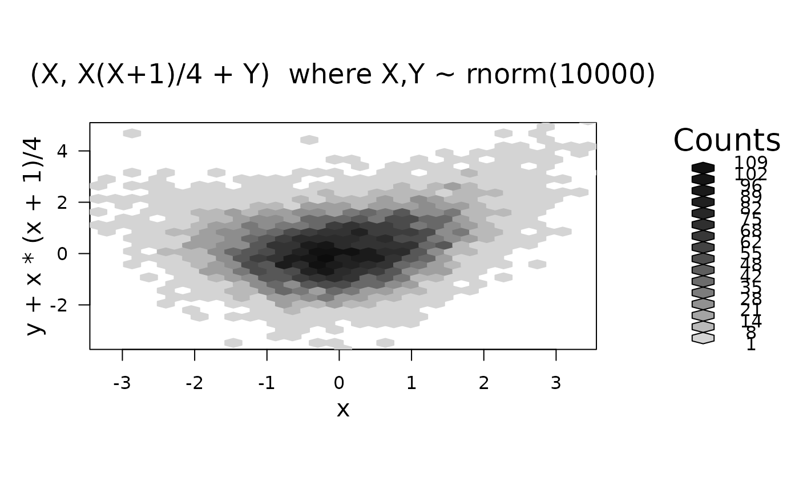
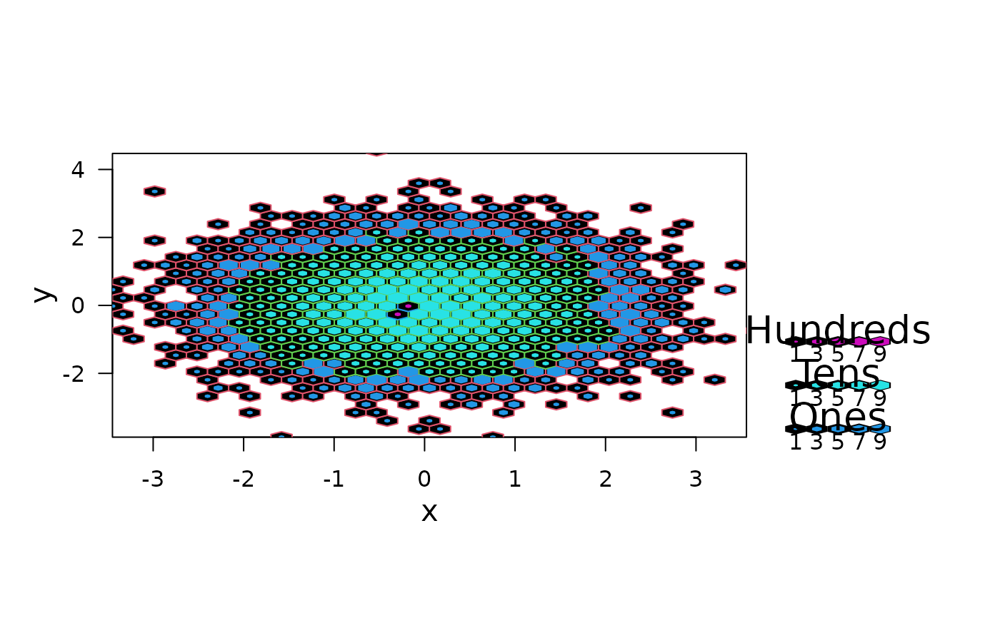

hexbin.RdCreates a "hexbin" object. Basic components are a cell id and
a count of points falling in each occupied cell.
Basic methods are show(), plot()
and summary(), but also erode.
vectors giving the coordinates of the bivariate data
points to be binned. Alternatively a single plotting structure can
be specified: see xy.coords. NA's are
allowed and silently omitted.
the number of bins partitioning the range of xbnds.
the shape = yheight/xwidth of the plotting regions.
horizontal and vertical limits of the binning region in x or y units respectively; must be numeric vector of length 2.
optional character strings used as labels for
x and y. If NULL, sensible defaults are used.
logical indicating if the individual cell “IDs” should be returned, see also below.
an S4 object of class "hexbin".
It has the following slots:
vector of cell ids that can be mapped into the (x,y) bin centers in data units.
vector of counts in the cells.
The x center of mass (average of x values) for the cell.
The y center of mass (average of y values) for the cell.
number of hexagons across the x axis. hexagon inner diameter =diff(xbnds)/xbins in x units
plot shape which is yheight(inches) / xwidth(inches)
x coordinate bounds for binning and plotting
y coordinate bounds for binning and plotting
The i and j limits of cnt treated as a matrix cnt[i,j]
number of (non NA) (x,y) points, i.e., sum(* @count).
number of cells, i.e., length(* @count), etc
the function call.
character strings to be used as axis labels.
of class, "integer or NULL", only if IDs
was true, an integer vector of length n where
cID[i] is the cell number of the i-th original point
(x[i], y[i]). Consequently, the cell and count
slots are the same as the names and entries of
table(cID), see the example.
Carr, D. B. et al. (1987) Scatterplot Matrix Techniques for Large \(N\). JASA 83, 398, 424--436.
Returns counts for non-empty cells only. The plot shape must be maintained for hexagons to appear with equal sides. Some calculations are in single precision.
Note that when plotting a hexbin object, the
grid package is used.
You must use its graphics (or those from package lattice if you
know how) to add to such plots.
set.seed(101)
x <- rnorm(10000)
y <- rnorm(10000)
(bin <- hexbin(x, y))
#> 'hexbin' object from call: hexbin(x = x, y = y)
#> n = 10000 points in nc = 562 hexagon cells in grid dimensions 36 by 31
## or
plot(hexbin(x, y + x*(x+1)/4),
main = "(X, X(X+1)/4 + Y) where X,Y ~ rnorm(10000)")

## Using plot method for hexbin objects:
plot(bin, style = "nested.lattice")

hbi <- hexbin(y ~ x, xbins = 80, IDs= TRUE)
str(hbi)
#> Formal class 'hexbin' [package "hexbin"] with 16 slots
#> ..@ cell : int [1:2444] 48 103 202 284 445 522 698 720 747 759 ...
#> ..@ count : int [1:2444] 1 1 1 1 1 1 1 1 1 1 ...
#> ..@ xcm : num [1:2444] 0.6777 -1.5365 -0.0576 0.06 0.0155 ...
#> ..@ ycm : num [1:2444] -3.88 -3.77 -3.72 -3.62 -3.38 ...
#> ..@ xbins : num 80
#> ..@ shape : num 1
#> ..@ xbnds : num [1:2] -3.45 3.56
#> ..@ ybnds : num [1:2] -3.88 4.47
#> ..@ dimen : num [1:2] 94 81
#> ..@ n : int 10000
#> ..@ ncells: int 2444
#> ..@ call : language hexbin(x = y ~ x, xbins = 80, IDs = TRUE)
#> ..@ xlab : chr "x"
#> ..@ ylab : chr "y"
#> ..@ cID : int [1:10000] 2061 2881 4163 4173 4012 4508 3206 3927 2805 3196 ...
#> ..@ cAtt : int(0)
tI <- table(hbi@cID)
stopifnot(names(tI) == hbi@cell,
tI == hbi@count)
## NA's now work too:
x[runif(6, 0, length(x))] <- NA
y[runif(7, 0, length(y))] <- NA
hbN <- hexbin(x,y)
summary(hbN)
#> 'hexbin' object from call: hexbin(x = x, y = y)
#> n = 9987 points in nc = 562 hexagon cells in grid dimensions 36 by 31
#> cell count xcm ycm
#> Min. : 9.0 Min. : 1.00 Min. :-3.449949 Min. :-3.87679
#> 1st Qu.: 352.2 1st Qu.: 2.00 1st Qu.:-1.257343 1st Qu.:-1.22151
#> Median : 515.5 Median : 7.00 Median :-0.005620 Median :-0.02137
#> Mean : 517.5 Mean : 17.77 Mean :-0.001689 Mean : 0.02506
#> 3rd Qu.: 686.8 3rd Qu.: 24.00 3rd Qu.: 1.301911 3rd Qu.: 1.39114
#> Max. :1098.0 Max. :108.00 Max. : 3.557626 Max. : 4.47080